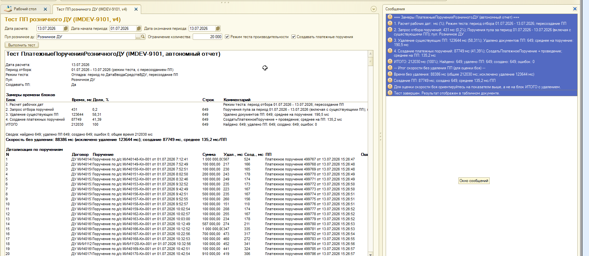

IMDEV-9101. Замеры автономного отчета внТестППРозничногоДУ на базе WIM_DU. Тестируется этап ПлатежныеПорученияРозничногоДУ (создание и проведение платежных поручений по уже существующим документам Поручение). Создание поручений и синхронизация с ДО в отчет не входят.
Цель тестирования - оценить производительность массового создания платежных поручений (ПП)
для пула Розничное ДУ при переводе ДС на биржу и определить узкие места
для оптимизации в регламенте внСинхронизацияНСИ.
Что измерялось:
СоздатьПлатежноеПоручениеЧто НЕ измерялось:
ЗаполнитьАналитикуПоДоговоруДУ и СоздатьПоручение (контур A синхронизации)
Внешний отчет внТестППРозничногоДУ.erf - автономная копия логики
ПлатежныеПорученияРозничногоДУ из обработки внСинхронизацияНСИ.
Не вызывает EPF и не подключается к ДО.
| Параметр | Прогон 1 | Прогон 2 (основной) |
|---|---|---|
| Дата расчета | 09.07.2026 | 13.07.2026 |
| Период отбора | 08.07 - 09.07.2026 | 01.07 - 13.07.2026 |
| Пул | Розничное ДУ (IMAPPS-34301) | |
| Режим теста производительности | Включен (пересоздание ПП) | |
| Ограничение количества | 200 (факт: 153) | 200 (факт: 649, лимит не сработал на полном наборе) |
| Создавать ПП | Да | |
Заполнить + Записать(Проведение)
Файл Новый3_Замеры_0107_1307.pff - серверный профиль прогона 2 (649 документов).
Агрегация по модулям подтвердила распределение времени внутри СоздатьПлатежноеПоручение
и обработчиков документа ПлатежноеПоручение.
| Показатель | Прогон 1 153 ПП |
Прогон 2 649 ПП |
Комментарий |
|---|---|---|---|
| Запрос отбора | 98 мс | 431 мс | 0,2% от общего времени - не узкое место |
| Удаление ПП (тест) | 28 588 мс | 123 644 мс | 58%, ~190 мс/ПП. В бою отсутствует |
| Создание ПП | 20 798 мс | 87 749 мс | 41-42%, стабильно ~135 мс/ПП |
| ИТОГО | 49 546 мс | 212 030 мс | С удалением (тест) |
| Итог для боя (без удаления) | ~21,0 сек | ~88,4 сек | Основная метрика |
| Среднее на 1 ПП (создание) | 135,9 мс | 135,2 мс | Стабильно на разных объемах |
| Ошибок | 0 | 0 | - |
| Блок | мс | % | Визуализация (тест) |
|---|---|---|---|
| Запрос | 431 | 0,2% | |
| Удаление (тест) | 123 644 | 58,3% | |
| Создание ПП (бой) | 87 749 | 41,4% |
| Операция / модуль | Суммарно, сек | ~мс/ПП | Доля |
|---|---|---|---|
Записать(Проведение) - всего |
56,3 | 87 | 64% |
Регистр ИсторияСтатусовОбъектов |
~68 | ~105 | ~77% проведения |
ОбработкаСобытийВыгрузкаCSVВоВнешнюСистему |
~20 | ~31 | ~23% проведения |
Заполнить(Поручение) |
26,2 | 40 | 30% |
| Шаблоны ПП + автозначения реквизитов | ~12 | ~19 | 14% |
| Прочее (даты, проверки) | ~3 | ~5 | 4% |
Примечание: доли внутри проведения перекрываются (вложенные вызовы). Сумма по строкам PFF больше 100% - это нормально для вложенной профилировки.
Ниже — фактический результат работы отчета внТестППРозничногоДУ v4 на базе WIM_DU.
Файл: Тестирование/Тест_Июль2026_созданиеПП_РозницаДУ.png.

| Заголовок | «Тест ПП розничного ДУ (IMDEV-9101, v4)» — версия ERF для контроля загрузки актуальной сборки |
| Дата расчета | 13.07.2026 — передается в СоздатьПлатежноеПоручение (дата ПП = ближайший рабочий день + время) |
| Период отбора | 01.07.2026 - 13.07.2026 — широкий стресс-период (в бою EPF отбирает уже по «предыдущий рабочий день») |
| Найдено / обработано | 649 поручений — все прошли цикл удаления (тест) + создания ПП |
| Режим | «Режим теста производительности» + «Создавать платежные поручения» — включено пересоздание ПП |
| Ограничение | На скриншоте 20 000 — лимит не ограничил выборку (факт 649 < 20 000) |
| Блок на скриншоте | Время | Доля | Что означает |
|---|---|---|---|
| 1. Расчет рабочих дат | ~0 мс | 0% | Вычисление ДатаНачалаПериода / ДатаОкончанияПериода — пренебрежимо мало |
| 2. Запрос отбора поручений | 431 мс | 0,2% | SQL-запрос к Документ.Поручение + договоры пула Розничное ДУ. Не узкое место |
| 3. Удаление существующих ПП | 123 644 мс | 58,3% | Только тест. Перед каждым созданием: отмена проведения + удаление старого ПП. Среднее 190,5 мс/ПП. В бою этого блока нет. |
| 4. Создание платежных поручений | 87 749 мс | 41,4% |
Метрика боя. СоздатьПлатежноеПоручение + проведение.
Среднее 135,2 мс/ПП, 649 док., 0 ошибок.
|
| ИТОГО | 212 030 мс | 100% | Полное время прогона с пересозданием (тестовый режим) |
| Итог без удаления (для боя) | 88 186 мс | ~42% | 431 + 87 749 мс — «чистая» скорость создания без тестового удаления |
| Скорость без удаления | 135,2 мс/ПП | - | Главный KPI для оценки регламента и прогноза на 10 000 ПП/день |
| Колонка «Договор / поручение» | Представление договора ДУ и ссылка на документ Поручение (основание ПП) |
| Колонка «Сумма» | Поручение.СуммаДС (на скриншоте в основном 100 000 и 1 000 000) |
| Колонка «Удал., мс» | Время удаления существующего ПП по этой строке. Разброс ~150-500 мс (выбросы на отмене проведения) |
| Колонка «Созд., мс» | Время СоздатьПлатежноеПоручение + проведение. Разброс ~110-340 мс; типично ~130-160 мс |
| Колонка «Платежное поручение» | Ссылка на созданный документ ПП (дата на скриншоте — 13.07.2026, время близко к моменту теста) |
| Колонка «Ошибка» | Пусто на всех 649 строках — ошибок записи/проведения не было |
Дублирует итоги замеров в текстовом виде (удобно для копирования в Excel / журнал). Ключевые строки:
IMDEV9101.ТестППРозничногоДУЗаписать(Проведение), статусы, CSV.ВЫБРАТЬ
ДоговорыДУ.Ссылка КАК ДоговорДУ
ПОМЕСТИТЬ ВТ_ДоговорыДУ
ИЗ
Справочник.ДоговорДУ КАК ДоговорыДУ
ГДЕ
ДоговорыДУ.Пул = &Пул
И НАЧАЛОПЕРИОДА(ДоговорыДУ.ДатаВводаСредствВДУ, ДЕНЬ) >= НАЧАЛОПЕРИОДА(&ДатаНачалаПериода, ДЕНЬ)
И НАЧАЛОПЕРИОДА(ДоговорыДУ.ДатаВводаСредствВДУ, ДЕНЬ) <= НАЧАЛОПЕРИОДА(&ДатаОкончанияПериода, ДЕНЬ)
И ДоговорыДУ.ДатаПолученияУведомленияОРасторженииДоговораДУ = ДАТАВРЕМЯ(1, 1, 1)
;
ВЫБРАТЬ
Поручение.Ссылка КАК ПоручениеПоДС,
...
ИЗ
Документ.Поручение КАК Поручение
ЛЕВОЕ СОЕДИНЕНИЕ Документ.ПлатежноеПоручение КАК ПлатежноеПоручение
ПО (ПлатежноеПоручение.ДокументОснование = Поручение.Ссылка)
И (НЕ ПлатежноеПоручение.ПометкаУдаления)
ГДЕ
ПлатежноеПоручение.Ссылка ЕСТЬ NULL
И Поручение.ДоговорДУ В (ВЫБРАТЬ ДоговорДУ ИЗ ВТ_ДоговорыДУ)
И Поручение.ВидОперации = ЗНАЧЕНИЕ(Перечисление.ВидыОперацийПоручение.Перевод)
И Поручение.Комментарий <> "Перевод ДС при расторжении"
И НЕ Поручение.ПометкаУдаления
Параметры прогона 2: Пул = Розничное ДУ, ДатаНачалаПериода = 01.07.2026,
ДатаОкончанияПериода = 13.07.2026, ДатаРасчета = 13.07.2026.
Функция СоздатьПлатежноеПоручение(ПоручениеПоДС, ДатаВводаСредствВДУ)
ПлатежноеПоручениеОбъект = Документы.ПлатежноеПоручение.СоздатьДокумент();
ПлатежноеПоручениеОбъект.Дата = БлижайшийРабочийДень(ДатаВводаСредствВДУ) + ВремяТекущее();
ПлатежноеПоручениеОбъект.Заполнить(ПоручениеПоДС);
ПлатежноеПоручениеОбъект.Записать(РежимЗаписиДокумента.Проведение);
...
КонецФункции
Данные Excel полностью совпадают с сообщениями отчета по прогону 2: 649 ПП, 212 030 мс ИТОГО, 87 749 мс создание, 135,2 мс/ПП, 0 ошибок.
| Сценарий | мс/ПП | 10 000 ПП, сек | 10 000 ПП, мин | 10 000 ПП, часы |
|---|---|---|---|---|
| Текущая скорость (факт) | 135,2 | 1 352 | 22,5 | 0,38 |
| После оптимизации статусов + CSV | ~95 | 950 | 15,8 | 0,26 |
| Целевая скорость (полный пакет оптимизаций) | ~70-85 | 700-850 | 11,7-14,2 | 0,19-0,24 |
Если на один вызов ПлатежныеПорученияРозничногоДУ отводится условно 120 секунд:
| мс/ПП | Макс. ПП за 120 сек | Запусков в день для 10 000 ПП |
|---|---|---|
| 135 (сейчас) | ~888 | ~12 |
| 95 (после 1-й волны) | ~1 263 | ~8 |
| 75 (цель) | ~1 600 | ~7 |
| Сценарий | Описание | Время (текущ.) | Оценка |
|---|---|---|---|
| Равномерно 24 часа | ~417 ПП/час, пакетами раз в час | ~56 сек/час | Укладывается |
| Пик: 2 часа утром | 10 000 ПП за 2 часа подряд | ~22,5 мин чистого CPU | Теоретически OK, риск блокировок |
| Один запуск регламента | Все 10 000 за один вызов | ~22,5 мин | Нужен длинный таймаут сеанса; риск таймаута регламента |
| Лимит 120 сек/запуск | Текущая скорость без доработок | max ~888 ПП | 10 000/день потребует ~12 запусков или оптимизации |
| Приор. | Область | Потенциал | Риск | Действие |
|---|---|---|---|---|
| P1 |
Регистр ИсторияСтатусовОбъектовПередЗаписью/ПриЗаписи ПП: 4-6 запросов и 2 записи на каждое ПП + смена статуса поручения |
-25..35 сек на 649 ПП (~30-40 мс/ПП) |
Средний |
Флаг массового режима регламента; пропуск повторного чтения статуса основания (известен "Новый");
передача предыдущего статуса в СохранитьТекущийСтатусОбъекта без лишнего запроса
|
| P1 |
ОбработкаСобытийВыгрузкаCSVВоВнешнюСистемуЗапись в ОбъектыДляВыгрузкиВоВнешнюСистему на каждое ПриЗаписи ПП
|
-15..20 сек на 649 ПП (~25-30 мс/ПП) |
Низкий-средний |
Отложенная пакетная регистрация в массовом режиме;
или пропуск при ДополнительныеСвойства.МассовоеСозданиеПП
|
| P2 |
Заполнение ПП (ЗаполнитьПоДокументуОснованию)Точечные ЗначениеРеквизитаОбъекта, шаблоны назначения платежа
|
-8..15 сек на 649 ПП (~12-23 мс/ПП) |
Низкий | Кэш шаблонов по ключу (банк, тип клиента, валюта); обогащение запроса отбора реквизитами счетов |
| P2 |
БлижайшийРабочийДеньОтдельный запрос к календарю на каждое ПП при одной дате расчета |
-1..2 сек | Низкий | Кэш результата на дату расчета в цикле регламента |
| P3 | Запрос отбора поручений | 431 мс | - | Не оптимизировать - доля 0,2% |
| - | Удаление ПП в тесте | - | - | Не переносить в бой; не является узким местом продакшена |
| - |
СоздатьПоручение / аналитика (контур A)
|
не замерялось | - | Отдельная задача; в текущем отчете вне scope |
СоздатьПлатежноеПоручение флаг массового режима (тест в ERF, затем EPF).ПлатежноеПоручение + ИсторияСтатусовОбъектов.внСинхронизацияНСИ.| Метрика | Сейчас | Цель |
|---|---|---|
| мс/ПП (создание) | 135 | 70-85 |
| ПП за 120 сек | ~888 | ~1 400-1 600 |
| 10 000 ПП, чистое время | ~22,5 мин | ~12-14 мин |
| Запусков/день при лимите 120 сек | ~12 | ~7-8 |
внТестППРозничногоДУ - быстрые итерации без EPF и без ДО.IMDEV9101.ТестППРозничногоДУ с итогом скорости без удаления.